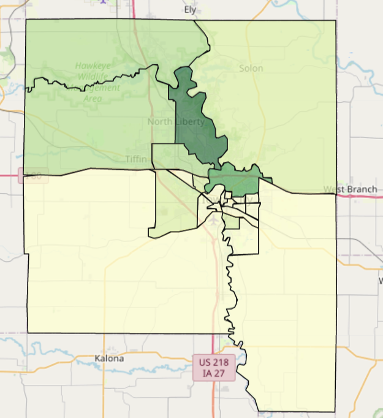

Heatmap of Density of Greenspaces in Johnson County
How Is Greenspace Operationalized? Greenspace exposure is commonly calculated using the NDVI tool to examine sattelite imagery of tree canopy cover over a region (Labib et al., 2020).
However, there is a lack of consensus as to the resolution appropriate for mapping NDVI index and the time of year in which the satellite image was obtained (Zhang et al., 2020). Here, we utilized Open Street Maps to examine the
location of greenspaces (e.g., parks and recreation areas) within Johnson County by querying the publicly available dataset. The OSM tags we used included:
- Leisure: Park, Garden, Nature Reserve
- Boundary: Forest, National Park
- Landuse: Forest, Recreation Ground
- Natural: Wood
Who Can Use This Tool? This tool was created for researchers to apply the code in their region of interest to examine greenspace density.
OSM was used to make the dataset publicly available and open for all for research or exploration. The link to the code can be found on Github
or by clicking on the link to the code. Please keep in mind that the code will need to be edited to best suit your purposes.